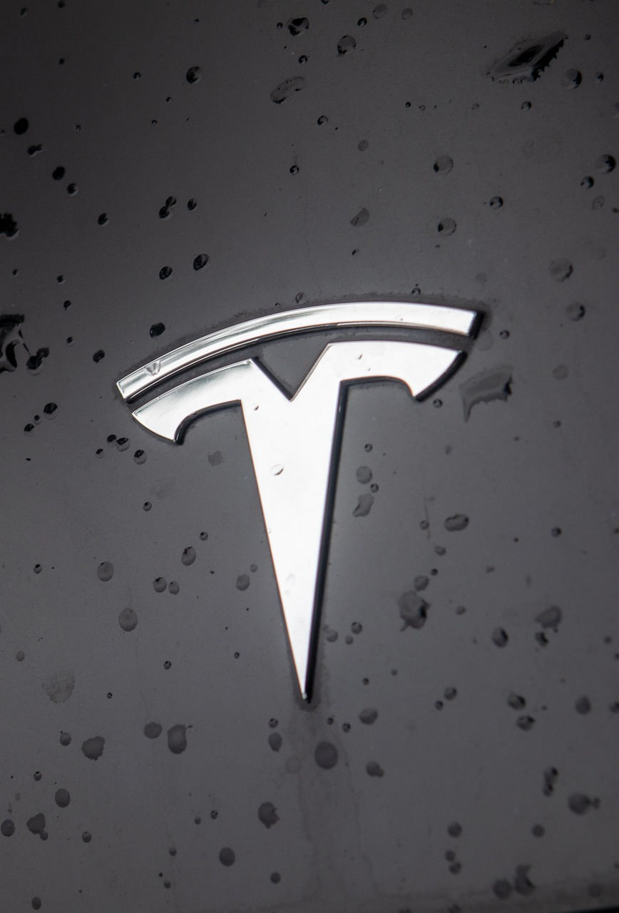
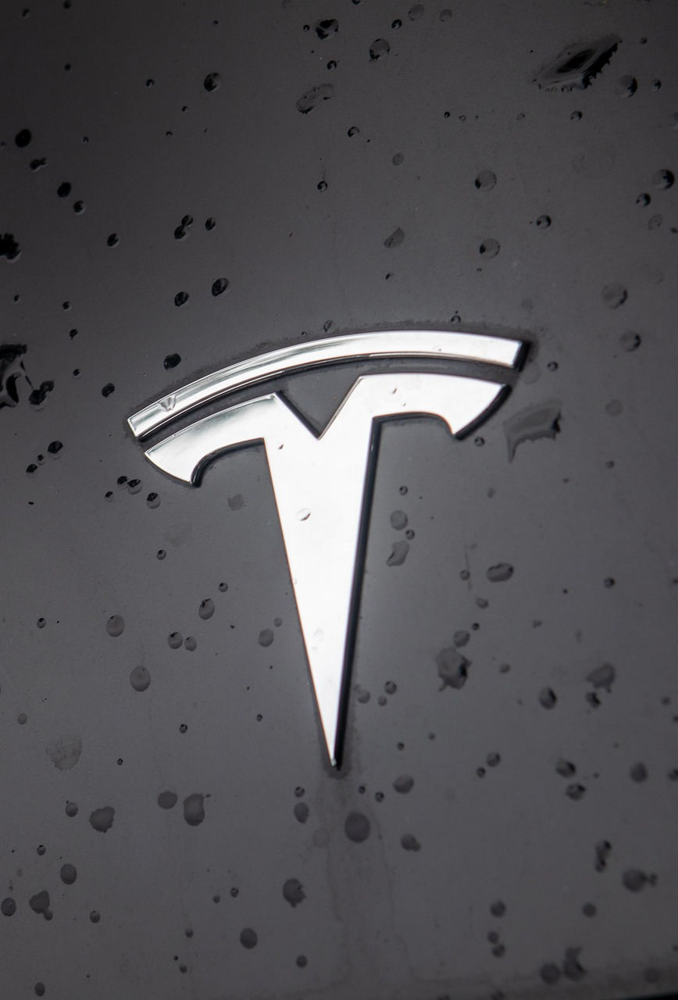

Tesla Unveils New Electric Car Model
 

Tesla has officially unveiled its latest electric car model today, showcasing cutting-edge technology and an impressive new design. The new model promises enhanced battery life, faster charging, and improved performance for long-distance travel.
The vehicle features a sleek exterior design, updated interior with state-of-the-art infotainment system, and advanced driver-assistance features. Tesla’s CEO emphasized that sustainability, safety, and innovation remain the core principles behind every new release.
Automotive experts note that this new Tesla model could redefine the standards for electric vehicles in terms of efficiency, comfort, and affordability. Pre-orders are already open, and enthusiasts worldwide are eager to experience the new technology firsthand.
In addition, Tesla plans to expand its supercharger network to support the growing fleet of electric vehicles. The company also announced new software features that will enhance autonomous driving capabilities and overall vehicle performance.
This launch reinforces Tesla’s commitment to a sustainable future and continues its leadership in the electric vehicle market. The car is expected to reach customers later this year, and early reviews praise both its design and functionality.